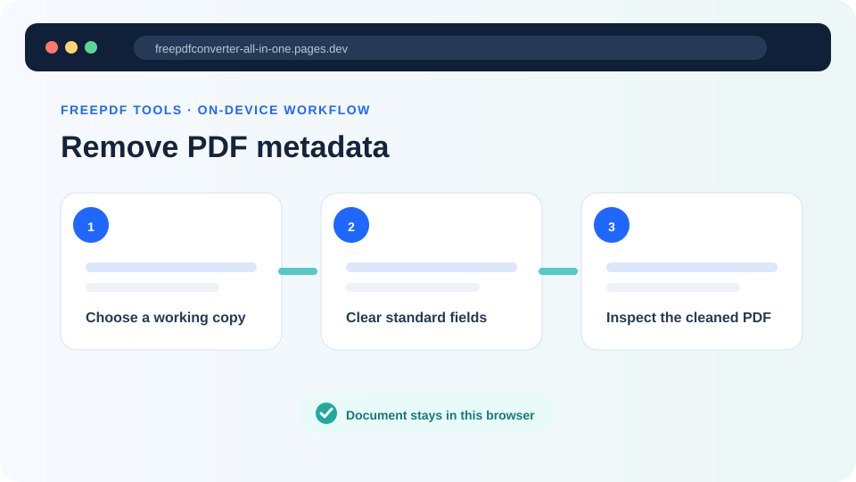
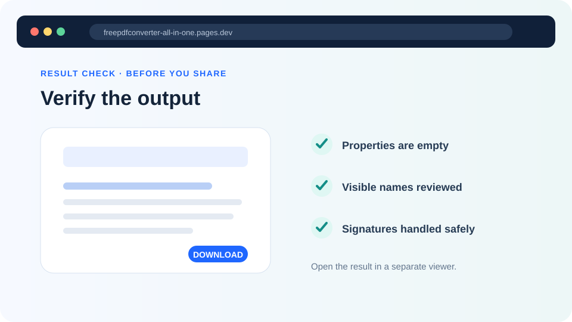

How to remove PDF metadata before sharing
Clear standard author, title, keyword, date and XMP fields—and understand why a complete privacy review must look beyond document properties.
Updated August 11, 2026 · By FreePDF Tools · 8 minute read


A PDF can contain identifiers in several places
The Document Properties window commonly shows title, author, subject, keywords, creator application, producer application and dates. These values usually come from the document-information dictionary, an XMP metadata stream, or both. Removing them prevents ordinary viewers and indexing systems from displaying those standard fields.
But “metadata” is often used more broadly. Comments can contain reviewer names and timestamps. Form fields can retain entered values. Attachments have filenames and their own data. Images may contain metadata from a camera or scanner. Visible headers, hidden layers, bookmarks, file names, fonts and proprietary application objects can reveal context. No small browser tool can truthfully promise forensic removal of every possible identifier from every PDF.
What this tool removes
The Remove PDF Metadata tool deletes standard document-information keys for title, author, subject, keywords, creator, producer, creation date, modification date and trapped status when they exist. It also removes the catalog's document-level XMP metadata reference. The PDF is then saved as a new file with no deliberate replacement author or producer value.
The tool does not parse every image, attachment or annotation. It does not flatten forms, sanitize JavaScript, redact page content, remove embedded files or certify anonymity. That limited scope is deliberate: a clear, testable claim is safer than a broad promise that cannot be verified.
Clean a PDF working copy locally
- Duplicate the source file and give the copy a neutral filename. Do not work on the only original.
- Open the working copy normally and review signatures, comments, attachments and form fields.
- Open the metadata remover and choose the working copy. The PDF bytes are parsed in browser memory.
- Select Remove metadata and download the cleaned result.
- Open that result in a different viewer and inspect Document Properties.
Clear common metadata fields
The tool uses a self-hosted PDF library and does not upload the document.
A practical pre-publication review
First, check the standard properties in at least one full PDF viewer. Empty fields are expected, but a viewer may display its own fallback values. Next, search the page text for the author's name, email address, organisation, internal project names and known document IDs. Open the comments and attachment panels. Tab through interactive fields and inspect whether old values remain.
For a low-risk handout, this may be a sensible review. For legal discovery, journalism source protection, regulated records or personal-safety concerns, use a specialist sanitization tool and an organizational process appropriate to the risk. A browser utility cannot replace forensic review.
Why reopening matters
A successful download only proves that the file was saved. Reopening checks whether the PDF is readable, whether important page content survived and whether the properties panel reflects the intended cleanup. If another application later edits and saves the PDF, it may add new creator, producer or date fields; check metadata again after the final edit.